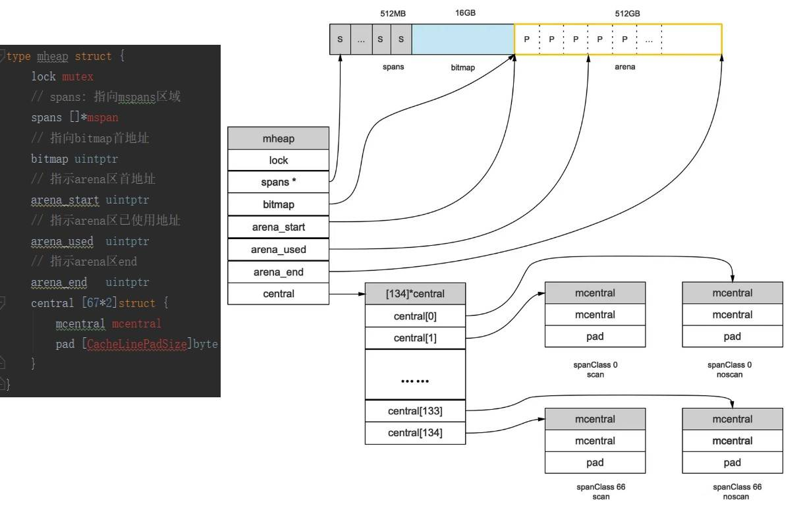

Go 语言设计与实现
参考资料
- 《Go 语言设计与实现》
- atomic.AddInt32(val, delta)：\val += delta && return *val
- atomic.CompareAndSwap(val, old, new)：\val == old ? *val = new && return 1 : return 0
第一章 源代码调试
GOROOT=/mnt/c/addons/workplace/test-lambda && cd $GOROOT/src && ./make.bash
/mnt/c/addons/workplace/test-lambda/bin/go run test.go
第二章 编译原理
- Go的编译器在逻辑上可以被分成四个阶段：
- 词法分析与语法分析：得到了每个文件对应的AST（抽象语法树）
- 类型检查和AST转换：检查语法错误，代码优化，把make和new改成对应操作类型
- 通用SSA生成：把AST生成SSA中间代码，对关键字再进行改写
- 最后的机器代码生成：根据Arch和OS生成对应机器码，需要用到汇编器
- 编译器一般分为前端和后端
- 前端的主要工作是将源代码翻译成编程语言无关的中间表示，即Go的前2个阶段
- 后端主要负责目标代码的优化和生成，即Go的后两个阶段
第三章 数据结构
- 数组：一块连续的内存
- 切片：24字节，uintptr、len、cap
- 哈希表：count(元素个数)、B(桶数量)、hash0(哈希种子)、buckets(桶数组)、oldbuckets(旧的桶数组)
- 字符串：16字节，uintptr、len。每一次写操作都是开辟新的空间。
// arr := []int{1,2,3} 的汇编，这里的SP是硬件SP
0x0014 00020 (hello.go:4) MOVQ $0, ""..autotmp_2+8(SP) //arr[0]=0
0x001d 00029 (hello.go:4) LEAQ ""..autotmp_2+16(SP), AX
0x0022 00034 (hello.go:4) MOVUPS X15, (AX) //arr[1]=0和arr[2]=0
0x0026 00038 (hello.go:4) MOVQ $1, ""..autotmp_2+8(SP) //arr[0]=1
0x002f 00047 (hello.go:4) MOVQ $2, ""..autotmp_2+16(SP) //arr[1]=2
0x0038 00056 (hello.go:4) MOVQ $3, ""..autotmp_2+24(SP) //arr[2]=3
0x0041 00065 (hello.go:4) LEAQ ""..autotmp_2+8(SP), AX
0x0046 00070 (hello.go:4) MOVQ AX, "".arr+32(SP) //sliceHeader.data=&arr
0x004b 00075 (hello.go:4) MOVQ $3, "".arr+40(SP) //sliceHeader.len=3
0x0054 00084 (hello.go:4) MOVQ $3, "".arr+48(SP) //sliceHeader.cap=3

第四章 语言特性
- 函数调用：
- 通过栈传递参数和返回值，内存地址高~低依次是：ret1、ret0、arg1、arg0
- 调用函数都是值传递
- 接口分为eface接口和iface接口
- eface接口，不带任何方法
- iface接口，例如Duck接口，Cat结构体实现了Duck的方法：
- 如果方法的接收者是结构体，即func (c Cat) Quack() {}
- var a1 Duck = Cat{} //正常编译运行
- var a2 Duck = &Cat{} //正常编译运行
- 如果方法的接收者是结构体指针，即func (c *Cat) Quack() {}
- var a1 Duck = Cat{} //编译报错
- var a2 Duck = &Cat{} //正常编译运行
- a1 := Cat{} //可正常调用a1.Quack()
- iface.tab包含有*interfacetype和*_type
- *interfacetype表示抽象接口的信息
- *_type表示具体类型的信息，它和*interfacetype._type不相等
- iface.tab._type指向的某个内存区域的起点，该内存区域包含type(具体类型)、uncommontype、[mcount]method
- type(具体类型)：普通类型则是_type类型，特殊类型各自不同，如struct、ptr等等
- 如果方法的接收者是结构体，即func (c Cat) Quack() {}
- 接口相关的文章
- 十种函数(方法)的调用形式
- 直接调用顶级函数：println()
- 直接调用一个值receiver的方法：(Cat{}).Quack()
- 直接调用一个指针receiver的方法：(&Cat{}).Quack()
- 间接调用一个interface的方法(包含有值方法的值)：var a Duck = Cat{} && a.Quack()
- 间接调用一个interface的方法(包含有值方法的指针)：var a Duck = &Cat{} && a.Quack()
- 间接调用一个interface的方法(包含有指针方法的指针)：var a Duck = &Cat{} && a.Quack()
- 间接调用方法值(值等于顶级方法)：a = println
- 间接调用方法值(值等于值方法)：a = (Cat{}).Quack
- 间接调用方法值(值等于指针方法)：a = (&Cat{}).Quack
- 间接调用方法值(值等于函数字面量)：a = func() {}
- 反射的三大法则：
- 变量->反射对象：func TypeOf(i interface{}) Type和func ValueOf(i interface{}) Value
- 反射对象->变量：Value.Interface()
- 要修改反射对象，其值必须可设置
第五章 常用关键字
- 前置知识：
- channel：c1:=chan int && c2:=c1 // 最后要么是c1要么是c2能收到消息
- 栈的自动增长，Dive into stack and defer
- Go编译器在每个函数的开始插入一段检测栈是否够用的代码
- 如果空间不够则转到runtime.morestack_noctxt，分配一个新的足够大的栈空间
- 再将旧栈的内容拷贝到新栈中，然后再执行函数。
- 如何强制让变量a逃逸在堆上：fmt.Sprint(a)
- for k,v = range(m)：迭代前v已分配内存，每次迭代将元素值拷贝到v处
- select如果含有default case则是非阻塞的
- select如果没有default case则是阻塞的，有多个case发送则随机执行一个
- 随机生成一个轮询顺序pollOrder 并根据Channel地址生成锁定顺序lockOrder锁住所有Channel
- 根据pollOrder轮询每个case的channel，如果有可以处理的channel则立即处理，没有则：
- 根据lockOrder遍历case，将当前Goroutine加入到所有相关channel的收/发队列
- 同时创建runtime.sudog单链表，顺序同lockOrder
- 调用runtime.gopark休眠
- 当前Goroutine被唤醒(只会被一个channel唤醒)，根据lockOrder遍历找到此channel对应的case
- defer的三种处理方法：
- 1.13前，在堆上分配runtime._defer结构体，defer处执行runtime.deferproc，退出函数执行runtime.deferreturn
- 1.13中，在栈上分配runtime._defer结构体(函数最多执行1次defer)，defer处执行runtime.deferprocStack，退出函数执行runtime.deferreturn
- 1.14中，开放编码(函数最多执行8次defer且defer不在循环结构中)
- 通过deferBits存储defer的相关信息
- 如果defer的执行可以在编译期确定，会在函数返回前直接插入相应的代码
- defer func(...args) //args如果有表达式会在runtime.deferproc前计算好，参见defer-example1
- panic和recover的规则
- panic只会触发当前Goroutine的defer，然后让整个进程退出
- recover只有在defer中调用才会生效；
- panic允许在defer中嵌套多次调用
- panic和recover：
- 编译器将panic和recover转换成runtime.gopanic和runtime.gorecover
- 运行时执行runtime.gopanic，会从Goroutine的链表依次取出runtime._defer结构体并执行
- 遇到runtime.gorecover就会将_panic.recovered标记成true并返回panic的参数。在这次调用结束之后，runtime.gopanic还会调用runtime.recovery
- 没有遇到runtime.gorecover就会一直执行runtime._defer结构体，最后执行runtime.fatalpanic
- (如果执行runtime._defer结构体时又有panic，则加到runtime._panic链条，runtime.fatalpanic会统一打印，参见panic-example1)
- make和new：
- make只能初始化slice、map、channel
- make([]int, 0)返回包含data、cap和len的结构体reflect.SliceHeader
- make(map[int]int, 10)返回一个指向runtime.hmap结构体的指针
- make(chan int, 5)返回一个指向runtime.hchan结构体的指针
- new根据逃逸分析分三种种处理情况
- 分配在栈上
- 分配在堆上，若分配内存是0，则直接指向zerobase，参见new-example1
- 分配在堆上，若分配内存大于0，则调用runtime.newobject
- new和var没有差异，初始化后的map/channel是nil，直接赋值会panic，slice也是nil(但是append赋值是ok的)
- make只能初始化slice、map、channel
// map的for-range执行时的伪代码
key := nil
val := nil
mapiterinit(typeOfMap, map, &hit)
for ; hit.key != nil; mapiternext(&hit) {
key = *hit.key
val = *hit.val
...
}
// chan的for-range执行时的伪代码
temp, ok := <-chan
for ; ok != false; temp, ok = <-chan {
val := temp
temp = nil
...
}
// defer-example1：输出0
func main() {
a := 0
defer println(a)
a = 1
}
// defer-example1：输出1
func main() {
a := 0
defer func() {
println(a)
}()
a = 1
}
// panic-example1，先打印3 2 1
func main() {
defer println("1 in main")
defer func() {
defer func() {
println("2")
panic("panic again and again")
}()
println("3")
panic("panic again")
}()
panic("panic once")
}
// new-example1 变量a和runtime.zerobase的地址相同
//go:linkname
var zerobase uintptr
func main() {
a := new(struct{})
fmt.Sprint(a) // 使其逃逸到堆上
println(&zerobase, a)
}
第六章 并发编程
- context.Background和context.TODO只是互为别名，作为根context使用前者，不确定是不是根context使用后者
- context.WithCancel返回ctx, cancelFunc，调用cancelFunc相当于给ctx的children发送关闭信号
- context.WithDeadline(parent, Now()+timeout)，基于WithCancel
- context.WithTimeout(parent, timeout)，基于WithDeadline
- context.WithValue(parent, key, val)，由于ctx是在一个协程写key/val，在子树协程查询，所以是协程安全的
- sync.Mutex的Lock和Unlock方法：加锁失败就把自己挂在锁队列上，等待持锁者Unlock的时候唤醒
- sync.RWMutex的Lock和Unlock方法：基于sync.Mutex，加锁时如果已经有读锁就把自己挂在锁队列上
- sync.RWMutex的RLock方法：如果存在写锁就把自己挂在锁队列上，没有则RWMutex.readerCount++
- sync.RWMutex的RUnlock方法：RWMutex.readerCount--，如果自己是最后一个读锁，则尝试唤醒写锁
- sync.WaitGroup的Add方法：WaitGroup.counter+=addNum，如果WaitGroup.counter==0，则唤醒WaitGroup.waiters
- sync.WaitGroup的Wait方法：如果WaitGroup.counter==0直接return，否则WaitGroup.waiters++并挂起
- sync.Once的Do方法：第一次执行的时候把Once.done标记为1，保证只执行一次
- sync.Cond的Wait方法：把自己加入到Cond.notifyList并挂起
- sync.Cond的Broadcast方法：依次唤醒Cond.notifyList
- sync.Pool的Get和Put方法：如果有N个协程都需要一块临时内存时用Pool
- sync的扩展原语：
- atomic.Value的Store方法利用CAS保证原子写入，Load方法无锁读，所以比Mutex快
- errgroup.Group的Go方法创建协程，Wait方法等待协程完成并获取err
- semaphore.Weighted，用NewWeighted方法初始化size=n，Acquire方法size-=n，Release方法size+=n
- singleflight.Group的Do(hash, func)方法：第一次执行ok后结果存全局map，后续相同请求直接返回map[hash]
- runtime.addtimer：增加计时器。标记为timerWaiting，可能需要激活NetPoller
- 如果time.when<sched.pollUntil则需要提前激活，写fd，执行netpoll(0)时返回timer对应的goroutine
- runtime.deltimer：删除计时器。标记为timerDeleted，由P来清理它
- runtime.modtimer：修改计时器。若timer被删则新建一个
- runtime.cleantimers：清除计时器。取堆顶，timerDeleted则删除，timerModifiedEarlier/timerModifiedLater则移动
- runtime.adjusttimers：调整计时器。和cleantimers类似，可能会遍历P的全部timer
- runtime.runtimer：运行计时器。取堆顶，可能和cleantimers类似，可能runOneTimer：
- 取timer.period，>0是连续间隔的；=0是一次性的
- 计时器：Go中定时器实现原理及源码解析
- 计时器：两个模块会触发计时器
- 调度器调用 runtime.schedule 执行调度时；
- 调度器调用 runtime.findrunnable 获取可执行的 Goroutine 时；
- 调度器调用 runtime.findrunnable 从其他处理器窃取计时器时；
- 系统监控线程：遍历所有的P查找下一个需要执行的timer
- Channel：发送数据
- 如果有挂起的接收者，则直接把数据拷贝给接收者(栈收缩和写屏障)，并设置P.runnext=接收者
- 没有接收者且没有可写的缓冲，将自己加入Channel的sendq队列并挂起
- Channel：结束数据
- 如果有挂起的发送者，直接拷贝数据并唤醒发送者
- 没有发送者且缓冲区没有数据，将自己加入Channel的recvq队列并挂起
- Channel：关闭Channel。唤醒Channel上的recvq和sendq队列的所有Goroutine
- 基于任务窃取的调度：先取本地、全局队列，没有就从其他P获取
- 基于协作的抢占式调度：
- G.stackguard0=StackPreempt：GC暂停程序、系统监控发现协程超时10ms
- 让出协程：执行函数时可能会执行runtime.morestack->runtime.newstack
- 基于信号的抢占式调度：
- G.preemptStop=true：GC栈扫描时会调用runtime.suspendG设置preemptStop=true，并立即调用runtime.preemptM
- 让出协程：runtime.preemptM发送SIGURG信号中断线程，线程执行runtime.doSigPreempt->runtime.preemptPark
- runtime·osinit：全局ncpu=CPU核数
- runtime·schedinit：全局allp切片数量=MAX(ncpu, env(GOMAXPROCS))
- 将当前线程M和allp[0]绑定
- 将allp[0]除外的P都设置成_Pidle
- runtime.newproc：
- runtime.gfget(获取G)：P.gFree的个数少于32，就从全局sched.gFree取一段，若还是没有则malg新建
- runtime.runqput(存放G)：如果P的队列长度<P.runq(256)就加入P的队列，否则加入全局队列
- runtime·mstart：runtime.mstart1->runtime.schedule：
- runtime.globrunqget：有一定机率从全局队列获取G
- runtime.runqget：从P的队列获取G
- runtime.findrunnable：阻塞查找P(全局队列、P的队列、NetPoll的等待队列、从其他P窃取)
- runtime.execute：把runtime.goexit函数地址放在(0)SP，然后执行JMP 待运行函数地址
- runtime.goexit：每个G最终结束时会调用它
- runtime.gfput：把G放回空闲列表
- runtime.schedule：开始新的一轮调度
- 调度器执行调度(runtime.schedule)的时机：
- 基于信号：发送信号给线程，线程执行runtime.doSigPreempt->runtime.preemptPark
- 主动挂起：runtime.gopark->runtime.mcall->runtime.park_m
- G不会放入运行队列，状态改成_Gwaiting
- runtime.mcall会切换到g0的栈上调用runtime.park_m：分离M和G并执行runtime.schedule
- G等待一定条件满足后，执行runtime.goready->runtime.ready：把G重新放回运行队列
- 系统调用：runtime.exitsyscall->runtime.exitsyscall0
- 系统调用可以立即返回执行RawSyscall，否则执行Syscall(会插入runtime.entersyscall、runtime.exitsyscall)
- runtime.entersyscall->runtime.reentersyscall：分离M和P(M阻塞，其他G可以抢用P)
- runtime.exitsyscall可能执行exitsyscallfast：当前有空闲的P则直接关联P运行G(如果是原来的P更好)
- runtime.exitsyscall可能执行exitsyscallfast：分离M和G，G放全局队列并执行runtime.schedule
- 基于协作：runtime.Gosched->runtime.gosched_m->runtime.goschedImpl
- runtime.goschedImpl：分离P和G，G放全局队列并执行runtime.schedule
- 系统监控：runtime.sysmon->runtime.retake->runtime.preemptone
- 调度器-线程相关：通过runtime.startm：从sched.midle链表找空闲的M，没有找到就runtime.newm
- 调度器-关于g0：线程M会持有自己的g0；全局也有一个g0
- NetPoll针对epoll、kqueue、windows等等封装的统一接口：
- func netpollinit() //初始化，有且调用一次
- func netpollopen(fd uintptr, pd *pollDesc) int32 //加入监听
- func netpoll(delta int64) gList //<0一直阻塞、=0无阻塞、>0阻塞delta毫秒
- func netpollBreak() //唤醒NetPoll
- func netpollIsPollDescriptor(fd uintptr) bool //判断fd是否被NetPoll使用
- NetPoll如何提前触发计时器：
- 正常情况，如果没有事件epollwait会阻塞10ms
- 全局的管道netpollBreakWr和netpollBreakRd，往netpollBreakWr写事件，netpoll时会捕获到netpollBreakRd事件
- 所以往netpollBreakWr写事件，可以让epollwait提前返回，进而会执行checkTimers
- NetPoll初始化：三个触发时机
- 创建netFD时，调用net.netFD.init->runtime.poll_runtime_pollServerInit
- 创建文件fd时，调用os.newFile->runtime.poll_runtime_pollServerInit
- 添加计时器时，调用runtime.doaddtimer->runtime.netpollGenericInit
- （此三种时机检查全局netpollInited!=0则执行一次初始化操作）
- NetPoll的runtime.netpoll：
- 调用epollwait获取可读可写、netpollBreakRd事件，netpollBreakRd读一下即可
- 有可读可写事件，调用runtime.netpollready获取到G并加入toRun列表
- 调用runtime.injectglist把toRun列表注入到P或者全局的运行队列上
- NetPoll处理两类超时需求：
- 计时器的超时
- 文件和网络IO的超时
- NetPoll没有独立的线程，而是通过P和系统调用执行runtime.netpoll
- 系统监控的五项工作：
- 检查死锁
- 运行计时器 — 获取下一个需要被触发的计时器；
- 轮询网络 — 获取需要处理的到期文件描述符；
- 抢占处理器 — 抢占运行时间较长的或者处于系统调用的 Goroutine；
- 垃圾回收 — 在满足条件时触发垃圾收集回收内存；
// Go的启动过程（Go 1.16.10）
runtime/rt0_linux_amd64.s的_rt0_amd64_linux() JMP _rt0_amd64(SB)
runtime/asm_amd64.s的_rt0_amd64() JMP runtime·rt0_go(SB)
runtime/asm_amd64.s的rt0_go() CALL runtime·settls(SB) //TLS的初始化
CALL runtime·args(SB) //初始化执行文件的绝对路径
CALL runtime·osinit(SB) //初始化CPU个数和内存页大小
CALL runtime·schedinit(SB)//初始化命令行参数、环境变量、GC、栈空间、内存管理、所有P实例、HASH算法等
CALL runtime·newproc(0, runtime.mainPC)//新建协程并绑定runtime.main，放在P的本地队列等待调度
CALL runtime·mstart(SB) //启动M，开始调度goroutine
第七章 内存管理
- 图解Go语言内存分配
- heap区域占512G，共67108864页(每页8K)
- bitmap区域需要标记heap区域的指针情况：
- 假设heap区域有4个指针(32B)
- bitmap区域仅需要1B来标记4个指针，1b表示是否是指针，1b标记是否扫描
- 所以bitmap大小是512G / 32 = 16G
- spans区域占0.5G，67108864页每页对应一个指针，指向对应的mspan
- 线程缓存mcache是和P绑定的，见源码
- Golang垃圾回收 屏障技术
- 插入写屏障：
- stw通知开启插入写屏障、将所有对象加入白色标记表
- stw获取全局对象、栈对象加入灰色标记表
- 并发标记
- stw重新扫描栈(发生写操作的栈)，只扫到栈->堆边界这一层。大约需要10~100ms
- stw通知关闭插入写屏障
- 缺点1：需要stw重新扫描栈
- 缺点2：误标黑，开始时黑A->灰B，黑A切换指针到白C，这样B本来应该是垃圾却标黑了
- 删除写屏障：
- stw通知开启删除写屏障、将所有对象加入白色标记表
- stw获取全局对象、栈对象加入灰色标记表
- 并发标记
- stw通知关闭删除写屏障
- 缺点1：回收精度低，即使删除了最后一个指向A的指针，A依然存活
- 缺点2：波面倒退，删除指向A，A置灰，则又需要扫描A指向的B和C
- 混合写屏障：
- stw通知开启混合写屏障、将所有对象加入白色标记表
- stw获取全局对象
- 扫描栈对象无需stw，一个协程一个协程的扫，扫到协程1，协程1栈上对象全黑，指向的堆对象全灰
- 并发标记
- stw通知关闭删除写屏障
- 缺点1：一次写操作，两倍的标记

